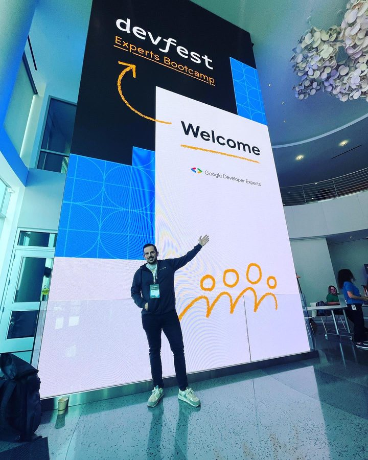
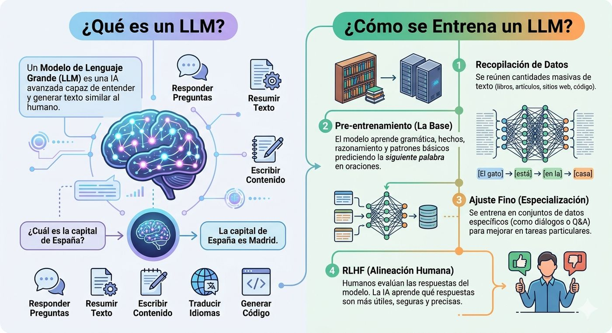
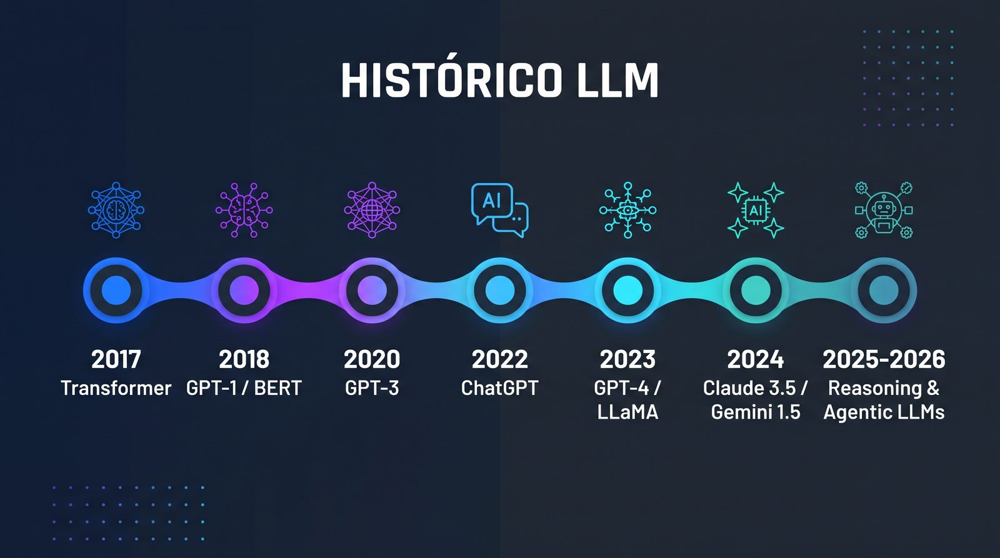
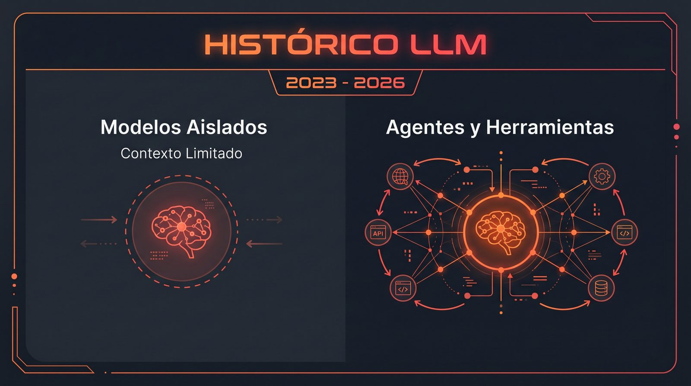
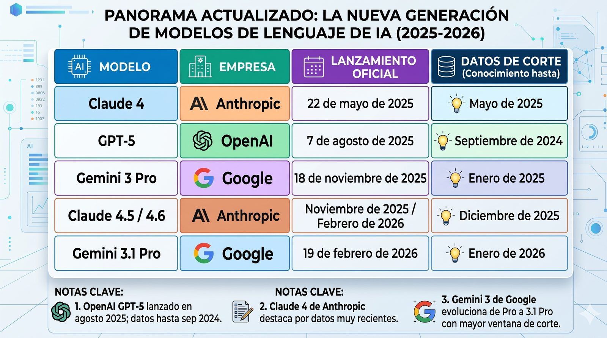
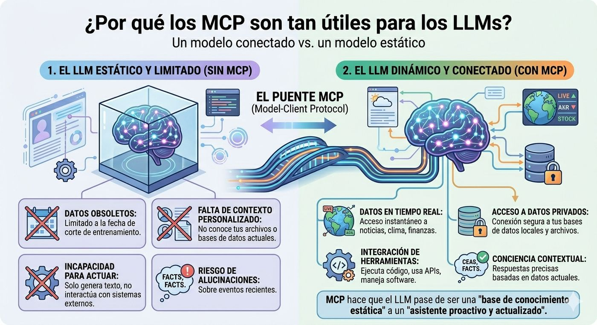
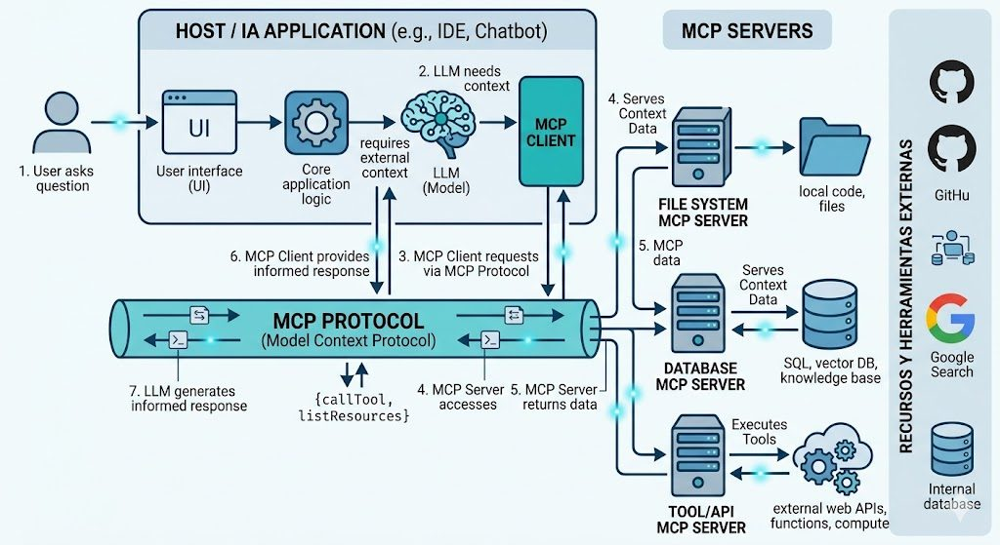
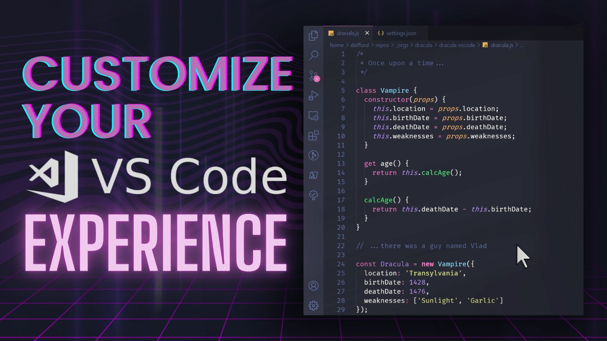
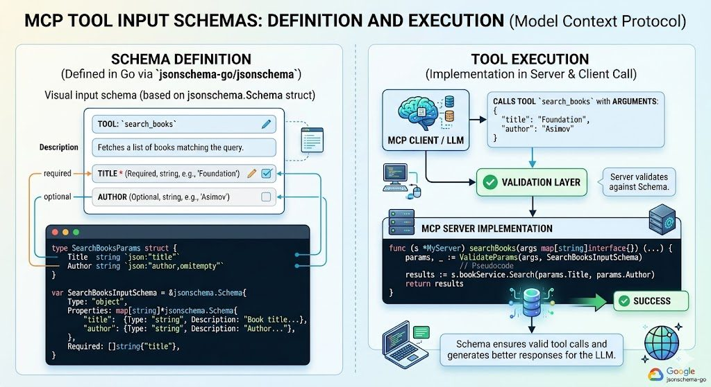
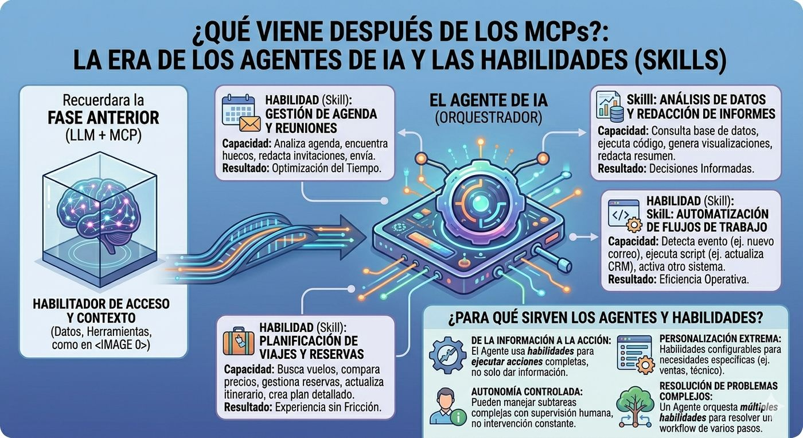

whoami
About the speaker
Alberto Gutiérrez
Principal Software Engineer at Red Hat · Open Source mode: ON
Find me
GitHub aljesusg
X / LinkedIn · GDG & GDE

~75 minutes
Agenda
- Intro — LLM context gap → MCP (Host / Client / Server, tools, transports)
- Setup — clone repo, confirm Go
- Live demo —
demo-exampleschedule tool, tokens & evals - Step 01 — Hello MCP over stdio
- Step 02 — Tools & schemas
- Step 03 — Streamable HTTP
- Step 04 — Connect Cursor / Gemini
- Home — Bonus step 05
links
Workshop materials
- Repo: github.com/aljesusg/devfestValencia2026
- These slides: GitHub Pages in the same repo
- Spec: modelcontextprotocol.io
- Core SDK: modelcontextprotocol/go-sdk
- Inspiration: kubernetes-mcp-server (methodology, not a clone)
![QR code linking to github.com/aljesusg/devfestValencia2026]()
Scan for the repo
credits
Google Cloud AI tokens
Claim free Google Cloud credits for AI / Gemini during the workshop:
https://g.dev/credits/promo-916ae52ed4765f76
Scan the QR or open the link on your phone.
![QR code for Google Cloud AI credits promo]()
Scan for credits
primer
What is an LLM?

Visual from the original deck — LLMs generate text; they still need live context for your data.
history
LLM timeline

From Transformers (2017) to reasoning & agentic LLMs (2025–2026).
history · agents
Isolated models → tools

This is why MCP matters: models stop being closed boxes and start calling tools.
history · cutoffs 2025–2026
New generation cutoffs

Even brand-new models freeze at a cutoff — MCP fills the gap with live data.
the problem
The context gap
- Hallucinations — the model guesses what it does not know about your private data.
- Data silos — facts live in APIs, databases, and local files the model cannot see.
- No live world — training cutoffs freeze knowledge in time.

definition
What is MCP?
The USB-C of AI integrations
An open standard (started by Anthropic) to connect language models with tools and data — write a server once, use it from many hosts.
Write once. Connect anywhere.
architecture
Host · Client · Server

MCP separates the brain (the model) from the hands (your server).
server primitives
Three pillars
Tools
Executable actions the model can invoke — the fun part.
Resources
Readable context: files, docs, schedules, logs.
Prompts
Reusable templates that steer common tasks.
Today we focus on tools.
transports
How they talk
Standard I/O
Local subprocess. Fast JSON-RPC over stdin/stdout. Perfect for Step 01.
Streamable HTTP
Remote-friendly. Hosts call your /mcp endpoint. Step 03.
stack
Go + official SDK
- Library:
github.com/modelcontextprotocol/go-sdk - Same core library used by production Go MCP servers
- We will not copy kubernetes-mcp-server complexity (toolsets, RBAC, OAuth, OTEL…)
- Methodology only: server → tools → transport → host

clients
Compatible hosts
| Client | Typical use | Notes |
|---|---|---|
| Cursor / VS Code | Coding agents | Great for this workshop |
| Claude Desktop | Personal assistant | Usually stdio |
| Gemini CLI | Terminal agents | HTTP (httpUrl) or stdio |
| ChatGPT / others | Tool integrations | Growing support |
live demo
Before we code: a finished MCP
demo-example/
One tool — schedule — that fetches the real DevFest Valencia agenda
from the public GDG Community API, then filters Friday / Saturday sessions live.
Try it
cd demo-example && go run . -http=:8080

live demo · try it
Ask the agenda
Example prompts (force a schedule tool call):
- “What is on the DevFest schedule on Friday?”
- “Find Alberto’s session with the schedule tool.”
- “Any talk about MCP or agents?”
No AI host? Use Inspector
MCP Inspector lists tools and calls them without Cursor:
cd demo-example
npx @modelcontextprotocol/inspector go run .Or over HTTP
# terminal 1
go run . -http=:8080
# terminal 2
npx @modelcontextprotocol/inspector \
--transport http \
--server-url http://127.0.0.1:8080/mcplive demo · tool definition
Tool: schedule
Typed inputs → the Go SDK builds the JSON Schema the host advertises to the model. Measure it: mcpshowcase.com/tools/mcp-token-calculator
type ScheduleInput struct {
Day string `json:"day,omitempty" jsonschema:"Friday|Saturday"`
Time string `json:"time,omitempty" jsonschema:"e.g. 18:05"`
Person string `json:"person,omitempty" jsonschema:"speaker substring"`
Description string `json:"description,omitempty" jsonschema:"match title+desc"`
}
mcp.AddTool(server, &mcp.Tool{
Name: "schedule",
Description: "Fetch the live DevFest agenda and filter sessions.",
}, handler)live demo · token cost
1 tool vs 2 tools
Tool definitions are resent on every turn. Estimate ≈ 3.6 chars/token (MCP Token Calculator).
| Design | What the model sees | ~Tokens / turn |
|---|---|---|
1 tool schedule |
day, time, person, description | ~180 |
| 2 tools | schedule_by_when + schedule_by_what |
~210 |
Surprise
Splitting costs ~17% more (~+30 tokens/turn). Each tool pays fixed overhead (name + description + schema shell).
Architecture reminder
Per 1,000 turns: ~180k vs ~210k definition tokens (before prompts, history, and tool results).
design · tokens
Why token efficiency matters
Every tool definition rides along on every turn. More tools → more cost, less room for the real conversation.
- Before adding a tool — look at the LLM context window and how the agent actually behaves.
- Ask when it fires — in which prompts, how often, and whether one broader tool is enough.
- Measure, don’t guess — count tokens, then validate behaviour with evals across models.
Test with evals
Use mcpevals.io to score expected tool behaviour (accuracy, relevance, completeness…) on different models — so a cheap design still does the right thing.
mcpevals.io — LLM scoring for MCP tools
live coding
What you will build
workshop/ — step by step
A tiny server over a local snapshot of that same agenda.
Tools: greet → list_sessions · get_session · find_speaker.
Same SDK as the live demo — smaller surface so everyone can finish in the session.
In production, prefer fewer broader tools (like schedule); here we split them to practice schemas.
checklist
Steps at a glance
01-hello-stdio—mcp.NewServer+ one tool + stdio02-tools-schemas— schedule tools with typed inputs03-http-transport—NewStreamableHTTPHandleron/mcp04-connect-cursor—url: http://127.0.0.1:8080/mcp
Solutions live under solutions/ if you get stuck.
wrap-up
Takeaways
- Standardize — stop writing one-off connectors per host.
- Control — you decide which tools and data are exposed.
- Start small — one tool on stdio beats a premature platform.
- Grow later — resources, prompts, auth: see
workshop/05-bonus-home.
